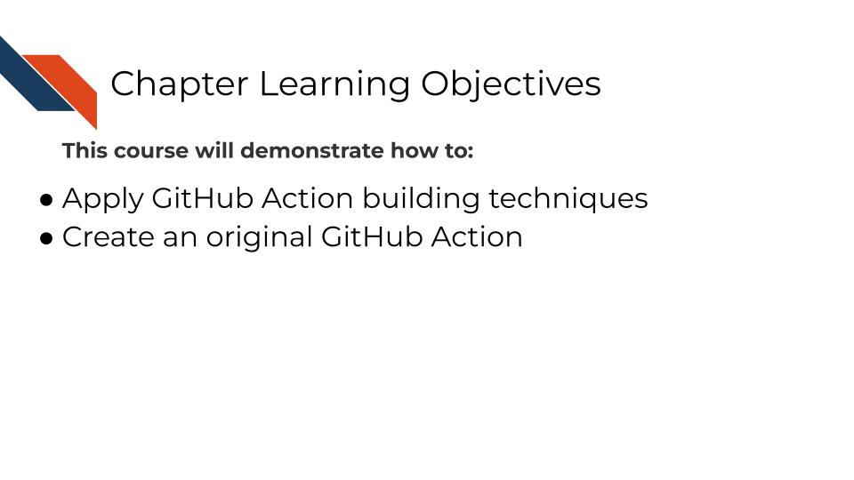
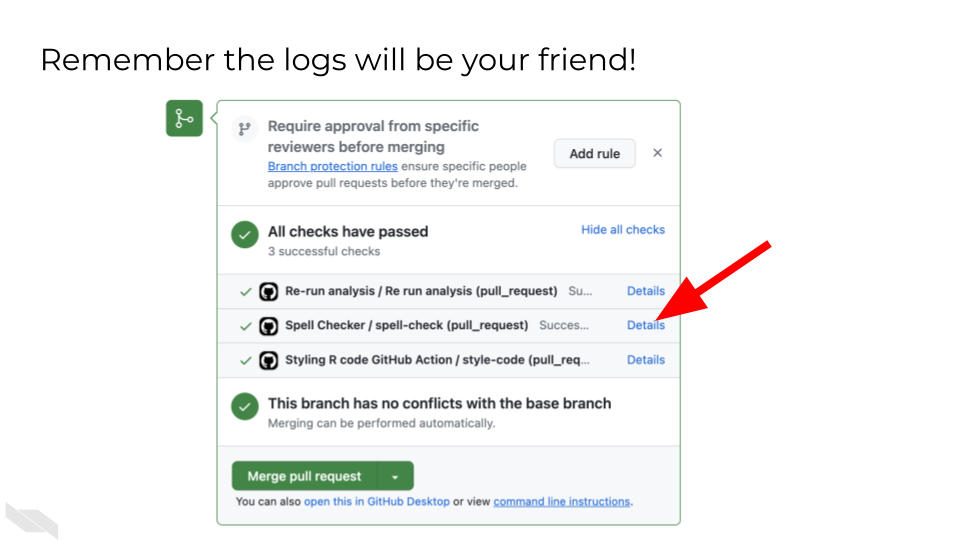

Chapter 4 Assignment 2: Building Your Capstone GitHub Action

4.1 Phase 1: Repository Setup and Planning
4.1.1 Step 1: Set Up Your Working Environment
- Navigate to your capstone sandbox repository
- Locate the
ASSIGNMENT_2.ymlfile within theASSIGNMENT_2directory - this is your starting template - Important: Keep the filename exactly as
ASSIGNMENT_2.ymlthroughout the assignment - Review the existing template to understand what’s already provided
4.1.2 Step 2: Create Your Working Branch
- Create a new branch for this assignment (e.g.,
github-action-assignmentorgha-build) - Switch to this branch before making any changes
- This isolates your work and enables the automated evaluation system
4.1.3 Step 3: Move File to Correct Location
- GitHub Actions must be in the
.github/workflows/directory - Move
ASSIGNMENT_2.ymlto.github/workflows/ASSIGNMENT_2.yml - Critical: The file must be in this exact location for GitHub to recognize it as a workflow file (and for this assignment to automatically evaluate your GitHub Action).
4.1.4 Step 4: Plan Your GitHub Action
- Decide what useful task your GitHub Action will perform
- Ideas for useful actions:
- Run automated tests on your capstone code
- Generate reports or documentation
- Check code quality or formatting
- Create data visualizations
- Send notifications when certain conditions are met
- Validate data files or configurations
You never want to put sensitive PHI or PII on GitHub, even in a private repository. And you will want to limit the size of any data files you are putting on GitHub unless you have large file storage (GitLFS) capabilities. So if you want to run a report, create a visualization, or validate a data file, then perhaps make a small toy dataset.
While learning, it can be really helpful to pick an action that produces something that you can visually inspect (e.g., a report or plot) because if it is generated and looks how you expect, you can confirm that your GitHub Action is successful and doesn’t have a silent failure.
4.2 Phase 2: GitHub Action Development
4.2.1 Step 5: Understand the Template Structure
- Open
ASSIGNMENT_2.ymland examine the existing structure - Identify the key components:
name:- What your action is calledon:- When it should triggerjobs:- What it should dojob-name:- an identifier of the job specificallyruns-on:- What environment to use
4.2.2 Step 6: Define Your Action’s Purpose
- Choose a meaningful trigger (
on:):pull_request:- Runs when PRs are opened/updated (good for testing)push:- Runs when code is pushed to specific branchesworkflow_dispatch:- Allows manual triggering (useful for development)schedule:- Runs on a time schedule (e.g., once a week)
- Design your job steps:
- Start with
actions/checkout@v4to get your repository files - Add steps that accomplish your chosen task
- Include error handling and status checks
- It’s important to name steps so that you can access and check outputs of those steps.
- Start with
4.3 Phase 3: Implementation Strategies
4.3.1 Step 7: Start Simple and Build Up
- Begin with a basic action that you know will work
- Test early and often to catch issues quickly
- Add complexity gradually, testing each addition
4.3.2 Step 8: Use Course Knowledge
- Apply containers knowledge:
- Choose appropriate
runs-on:environment - Consider using Docker containers if you need specific software
- Reference container images from Docker Hub if needed
- Choose appropriate
- Apply automation principles:
- Ensure your action fails appropriately when something goes wrong
- Include meaningful output and logging
- Use environment variables and secrets when needed
4.4 Phase 4: Testing and Iteration
4.4.1 Step 10: Open Your Pull Request
- Commit your changes to your branch
- Push the branch to GitHub
- Open a pull request from your branch to main
- Key: This triggers the
GHA Assignment Evaltest
4.4.2 Step 11: Monitor Automated Evaluation & Interpret Evaluation Results
- Watch for the
GHA Assignment Evalcheck to start running - This evaluator will test whether your GitHub Action runs successfully. The evaluator checks for common issues and provides guidance.
- Wait for it to complete and comment on your PR
- Success: You’ll receive a validation code in the PR comment
- Failure: You’ll get specific error messages and troubleshooting tips
4.5 Phase 5: Troubleshooting and Refinement
4.5.1 Step 12: Debug Common Issues
- YAML syntax errors: Check indentation, colons, and spacing
- File location errors: Ensure file is in
.github/workflows/ - Permission errors: May need to add GitHub secrets or tokens (see Assignment 3 for more information if necessary)
- Missing dependencies: Check if your chosen environment has required software
- Silent failures: Verify your action actually does what you expect
![Troubleshooting tips for GitHub Actions. Tip Details General Debugging. Look out for silent errors. Actions may fail without obvious error messages. Look at the logs closely! Detailed examination of workflow logs is essential. Use workflow_dispatch/pull_request triggers for development. These triggers help test workflows during development. Print out things to test your assumptions. Add debug output to verify your workflow logic. Marketplace Actions. Read the docs carefully! Thoroughly review documentation before implementation. Try updating to later versions to fix problems.Newer versions often contain bug fixes. Avoid poorly documented or poorly maintained actions. Choose well-supported actions for reliability. Startup Issues. Check for missing essential specifications. Ensure all required parameters and configurations are present.Look for syntax issues. Verify YAML syntax and GitHub Actions syntax.Check for spacing issues.YAML is sensitive to indentation and spacing](04-building-a-gha_files/figure-html/1ExTZsKDHKM0fIi0_tB80qd8cHvqjEDyNJp-OsnvZ19o_g361b9572af4_0_382.png)
4.5.2 Step 13: Apply Troubleshooting Strategies
- Read error messages carefully: They often contain the exact solution
- Check the logs: Go to Actions tab and examine detailed output
- Test incrementally: Make small changes and test each one
- Use marketplace actions: Leverage existing actions when possible
- Print debugging info: Use
echocommands to verify assumptions

![You may have to troubleshoot iteratively until your github action runs successfully. Git commit and push edits to your yml file and check your existing pull request to receive evaluation from automated assignment checks. Interpret the results. If you were not successful, troubleshoot and iterate this process as needed, checking your pre-existing pull request for new evaluation results after making additional changes. Or if you were successful in your assignment, submit the verification code to your coursera quiz (or move on to the next section if you are not using coursera or some certification method to take this course)](04-building-a-gha_files/figure-html/1ExTZsKDHKM0fIi0_tB80qd8cHvqjEDyNJp-OsnvZ19o_g36815e8f502_0_0.png)
4.7 Suggestions for Troubleshooting and Best Practices
4.7.1 Choose Appropriate Scope
- Your action should be useful but not overly complex
- Focus on demonstrating GitHub Actions concepts rather than building production software
- A working simple action is better than a broken complex one - iterate, knowing if you need more features you can add these incrementally. Start a new pull request for each new feature.
4.7.2 Leverage Course Materials
- Use troubleshooting strategies from the GitHub Actions course
- Reference YAML examples from course exercises
- Apply container knowledge if your action needs specific software environments
4.7.3 Use the Evaluation System Effectively
- The automated evaluator provides immediate feedback
- Don’t be afraid to make multiple attempts - each iteration teaches you something
- Read the evaluator’s comments carefully for specific guidance
4.7.4 Common Useful Actions for Capstone Projects
- Data validation: Check that uploaded data meets expected formats
- Report generation: Automatically create summary reports from data
- Code style checking: Ensure consistent formatting and style
- Dependency checking: Verify all required packages are available
- Backup creation: Automatically backup important files
- Notification system: Send alerts when certain conditions are met
Remember: This assignment builds on both the containers knowledge (for choosing appropriate environments) and the GitHub Actions automation concepts. The goal is to demonstrate your understanding of continuous integration principles by creating something that automatically improves or validates your capstone project.
The automated evaluation system is designed to help you learn through iteration, so embrace the feedback loop and keep refining your action until it works reliably!